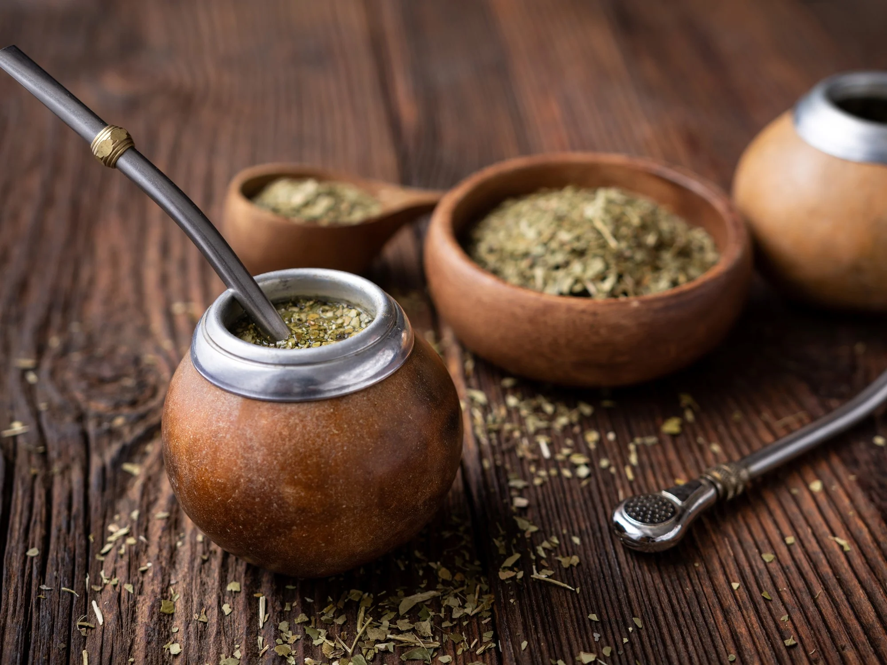

Nuestros Inicios
Hace más de 20 años, un grupo de amigos apasionados por el mate decidió emprender un negocio que reflejara su amor por esta tradición argentina. Así nació nuestra empresa, dedicada a la venta de mates y accesorios. Desde entonces, hemos trabajado incansablemente para ofrecer a nuestros clientes productos de la más alta calidad y con diseños únicos que reflejan nuestra pasión por el mate. Hoy en día, seguimos siendo fieles a nuestros valores y estamos orgullosos de haber llevado la cultura mateadora a lugares lejanos. ¡Gracias por ser parte de nuestra historia!
Locales
Desde el corazón de la ciudad hasta los rincones más remotos del país, nuestros locales están dispersos como pequeños oasis mateadores. Cada uno de ellos es un refugio para los amantes del mate, donde podrán encontrar una amplia variedad de mates y accesorios. Nuestro objetivo es acercar la experiencia mateadora a todos, sin importar dónde se encuentren.
Experiencias
- "Descubrí un mundo de sabores y sensaciones en cada sorbo gracias a los mates de calidad que encontré en esta empresa. Cada compra se convierte en una experiencia única, llena de aromas y momentos de conexión con la tradición mateadora. ¡No puedo esperar para explorar más y compartir esta pasión con mis seres queridos!"
- "Mi experiencia en DagoMates ha sido simplemente maravillosa. Cada vez que entro a su tienda, me sumerjo en un ambiente cálido y acogedor, rodeado de mates de diferentes estilos y diseños. El equipo siempre está dispuesto a brindarme asesoramiento personalizado, ayudándome a encontrar el mate perfecto para mí. ¡Mi ritual del mate nunca fue tan especial!"
- "Explorar el catálogo de DagoMates fue como adentrarme en un mundo lleno de posibilidades. Desde mates tradicionales hasta modernos diseños vanguardistas, encontré el compañero perfecto para disfrutar mi mate diario. La calidad de los productos es excepcional y cada compra se convierte en una experiencia gratificante. ¡Gracias por hacer que mi amor por el mate sea aún más apasionante!"